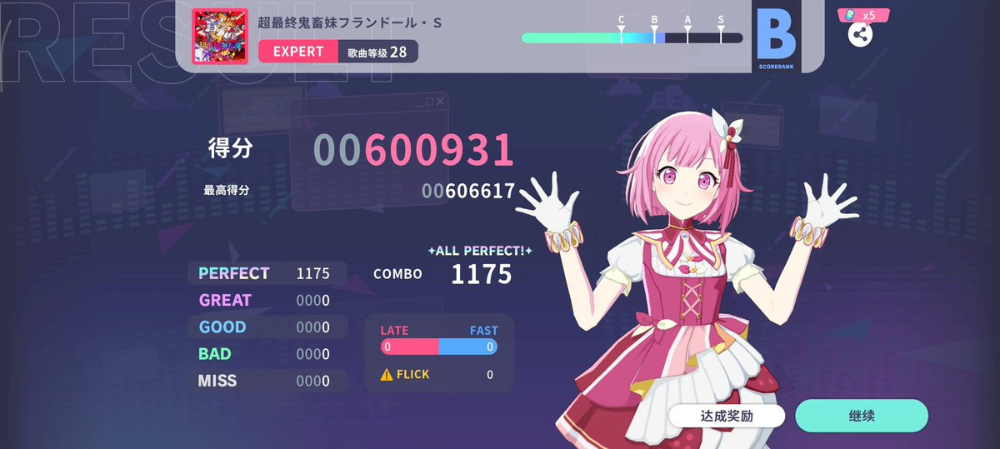

Exp cat
@bui_tu46916
@tianxiao0502 @Psydrugswiki 甜笑牛逼

Pr5ga6al1N
@tianxiao0502
更新置顶
我是天晓，psydrugswiki暂任wiki主，淡推偶尔上来看看/纷争别找我/。pdw官号@Psydrugswiki
maimai真极超将晓将桃极白极持有，小歌王但是大歌一点不会（泣
其他音游很菜让让我。😭
雀魂/邦多利/v+/jpop/drugs🉑我成分很杂。
友lgbt友一切正常人。
我adhd很严重容易忘记要干啥别骂我球球了。 https://t.co/Gwvwa2zpqo